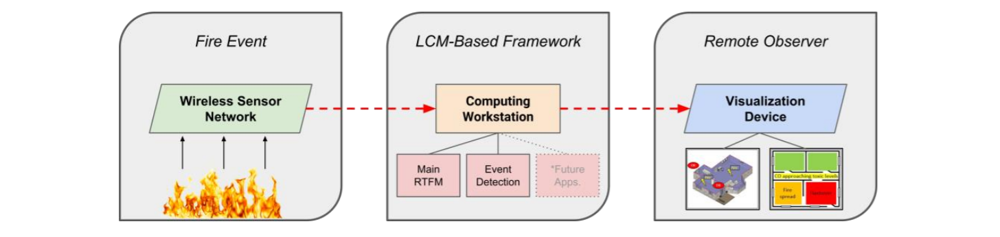

During a fire event, environmental threats to building occupants and first responders include extreme temperatures, toxic gases, disorientation due to poor visibility coupled with unfamiliar surroundings, and a changing indoor environment. In addition to these hazards, firefighters often lack critical information for making decisions once on the scene. The lack of information coupled with the dynamics of natural fire events leads to several near-misses, injuries, and deaths each year. Additionally, these challenges slow the rescue time of building occupants and prolong the suppression of the fire. Integrating real-time measurements from sensors into the fire intervention strategy may provide an opportunity for a new technological advancement to improve the practice of firefighting. In this study, a computational framework using Lightweight Communications and Marshalling was developed for connecting real-time fire data to an event detection sub-model to demonstrate how computing can be used for fire monitoring and sensor-assisted firefighting. A post-processed example using these monitoring computations in conjunction with a building information model is provided as a demonstration for presenting real-time data in the field. This work serves as a step towards an intelligent firefighting system based on real-time computing tools.
